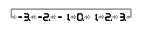
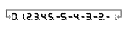

Outside Air Temperature Indicator Calibration
|
Troubleshooting
If the indicator displays — — — °C (or — — — °F) for more than 2 seconds after selecting the outside air temperature display mode, check the outside air temperature sensor, or
gauge control module self-diagnostic function.
|
|
|
Calibration (Segment type)
The outside air temperature indicator's displayed temperature can be recalibrated ±3 °C (or ±5 °F) to meet the customer's expectations.
|
Centigrade

Fahrenheit
 |
|

|